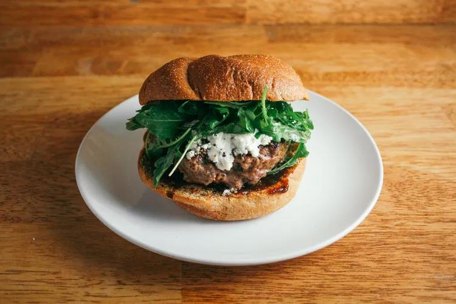

Sweet & Savory Burger With Fig Jam, Goat Cheese & Arugula
Price: R79.99
Serve: 1 persom
Write Up
- Preheat oven to 350° F. Place buns on a baking sheet, and toast in oven for about 10 minutes.
In a small bowl, drizzle olive oil over arugula, and season with salt and pepper. Give it a toss.
- In a mixing bowl, combine ground beef with salt, pepper, crushed red pepper, onion powder, and garlic powder. Mix with your hands. (NOTE: Any time you handle raw meat, wash your hands thoroughly with soap and water before touching anything else.) Form beef into two patties.
- Heat your cast iron skillet over medium heat. Melt butter or oil in skillet, and carefully place patties in pan. Always lay meat away from you to avoid splattering hot oil on yourself. Let patties cook for about 2 to 3 minutes before flipping (cooking time will depend on how thick your patties are). Once flipped, place goat cheese on each patty to warm and soften cheese. Cook second side for 2 to 3 minutes.
Assemble! Spread fig jam on the bottom bun. Place patty on top of fig jam. Top patty with arugula. Top arugula with top bun.
.png)